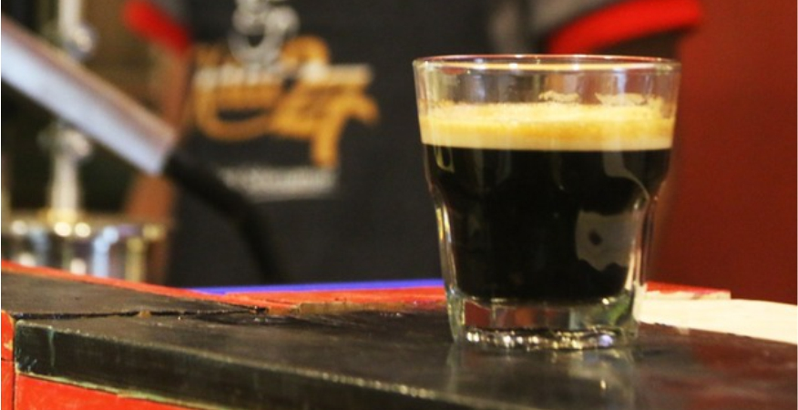
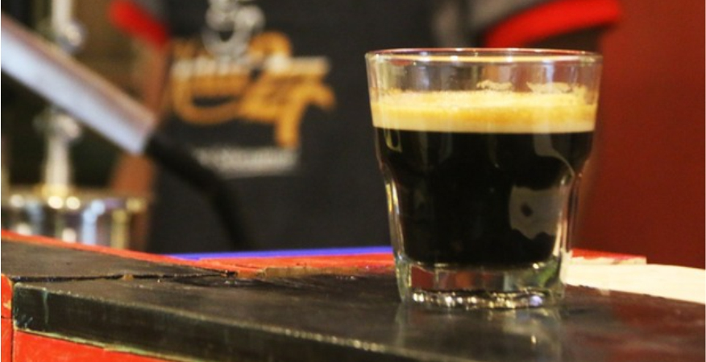

Kedai 27
Minum kopi telah menjadi budaya di Indonesia. Budaya minum kopi telah ada dari Sabang sampai Merauke. Sekarang ini kopi bukan hanya minuman untuk menghangatkan tubuh, tetapi telah menjadi sarana bersosialisasi.Mulai dari secangkir kopi percakapan yang hangat sampai pertukaran informasi terjalin. Maka dari itu, tidak mengherankan bahwa minum kopi telah menjadi gaya hidup. Kopi dapat disajikan dengan berbagai cara. Namun, untuk mendapatkan hasil terbaik yang dibutuhkan biji kopi pilihan dan mesin kopi yang canggih dan mahal. Dengan demikian, secangkir kopi yang baik hanya dapat dinikmati oleh kalangan tertentu saja. Berawal dari ide menyediakan kopi yang nikmat dan berkualitas untuk semua kalangan, Kedai 27 menciptakan mesin kopi khusus yang mampu menghasilkan secangkir kopi berkualitas. Mesin kopi kami mampu memproduksi espresso yang sama dengan kopi yang biasanya diproduksi oleh mesin kopi mahal dan membutuhkan daya listrik yang besar.
Alamat : Jalan Sukarno Hatta Km2, No12, Rt48 Kelurahan, Gn. Samarinda, Kec. Balikpapan Utara, Kota Balikpapan, Kalimantan Timur 76125
Buka setiap hari 10.00-00.00
Posting Komentar
Sampaikan kritik dan saran kamu di kolom komentar agar kami dapat menjadikannya sebagai bahan penilaian tentang tempat ini.